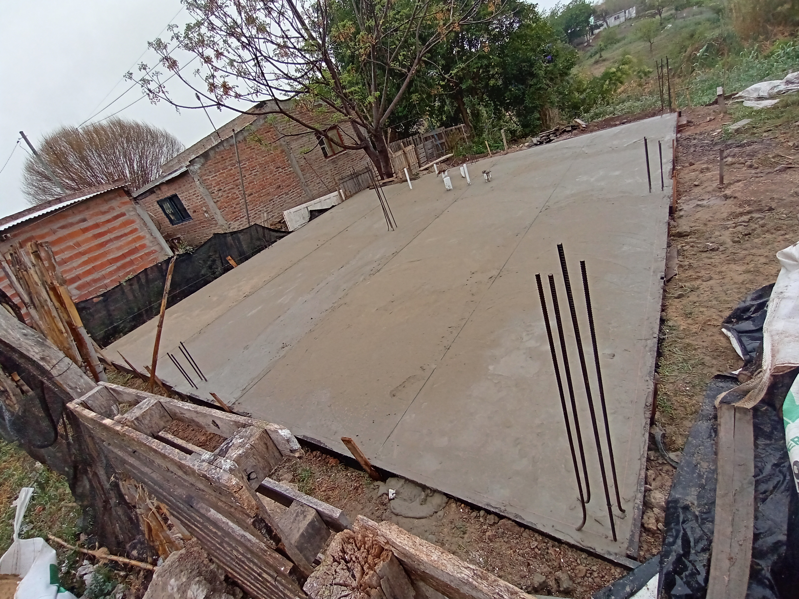
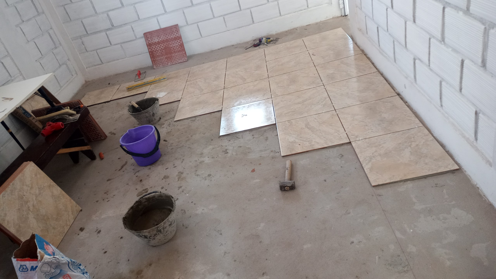
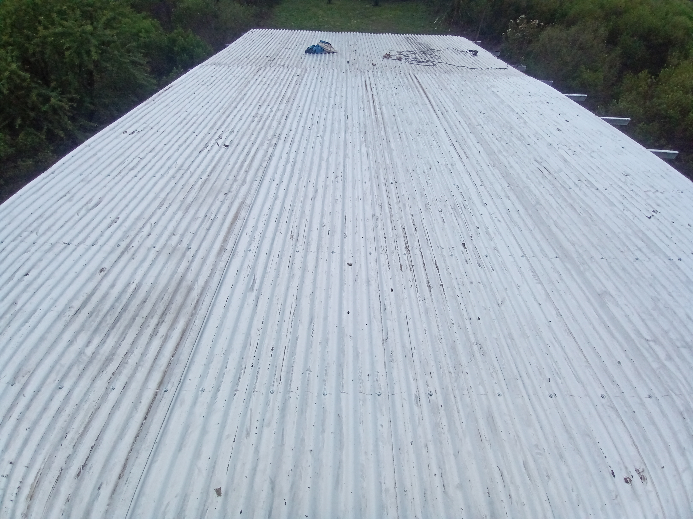
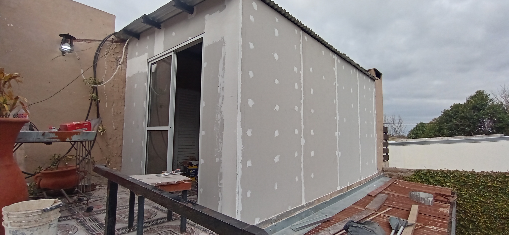
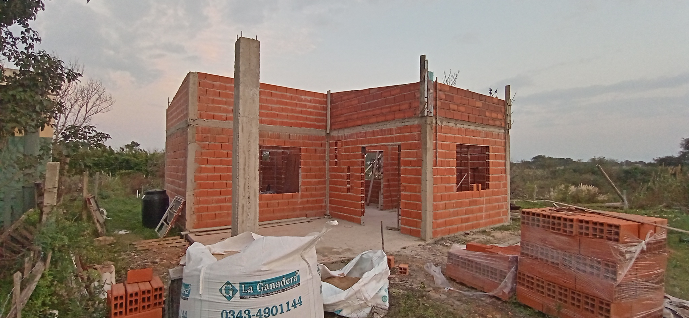
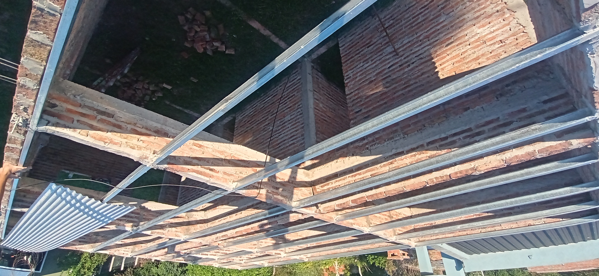

En esta página encontrará una galería con una muestra de mis trabajos realizados, mi total compromiso con la calidad y los resultados que puede esperar en su proyecto. Garantizo servicios de excelencia, presupuestos claros y atención personalizada. Consulte sin compromiso.
Perfil Profesional
Albañil con más de 10 años de experiencia en construcción, refacciones y mantenimiento de hogares. Trabajo con responsabilidad, cumplo tiempos de entrega y ofrezco soluciones personalizadas para cada cliente.
Especialidades
Revoque fino y grueso
Colocación de cerámicos y porcelanato
Construcción en seco (Durlock)
Estructuras pequeñas y lozas
Reparaciones de humedad y terminaciones
Galería de Trabajos
Una imagen vale más que mil palabras. Vea algunos de nuestros proyectos.






Contacto
Zona de trabajo: Villa Hernandarias y alrededores.
Teléfono: +54 9 3434 92568
¡Pedir Presupuesto por WhatsApp!También puedes escribirnos a: lucianobarrios1632@gmail.com